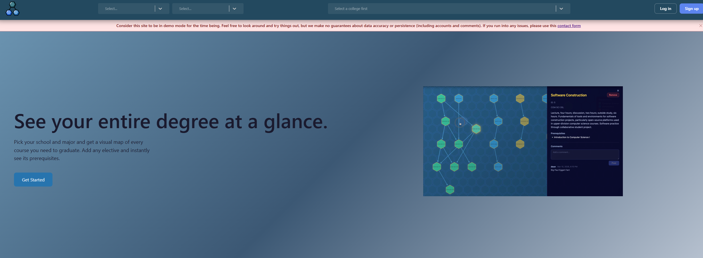
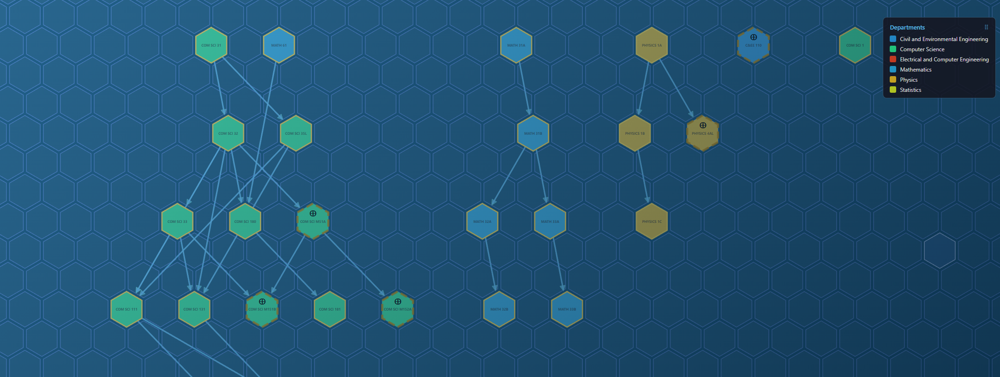
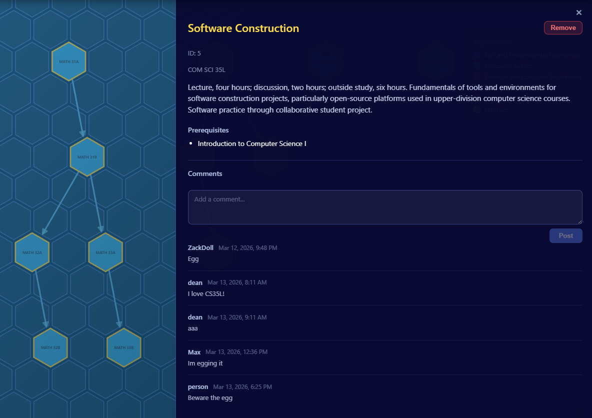
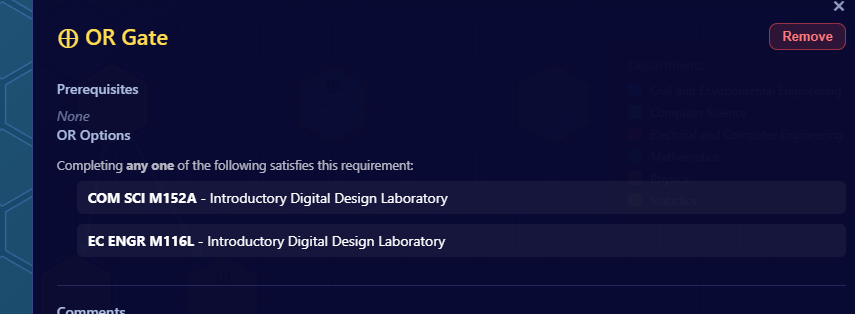
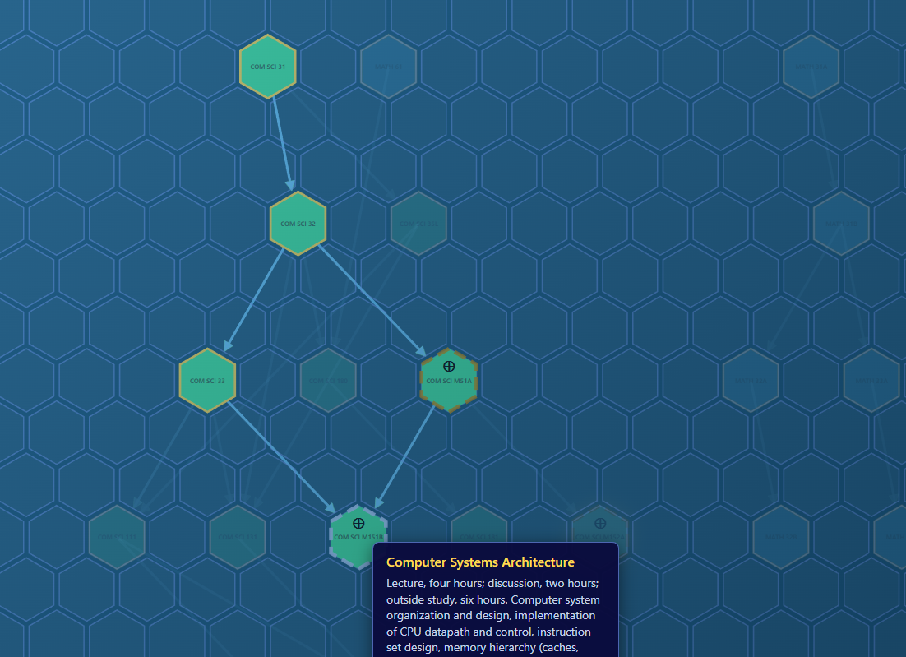
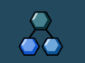

interactive hexgrid visualization of university course prerequisites, built to make scheduling less of a nightmare for transfer students
Scheduling classes is genuinely hard, especially as a transfer student. UCLA's prerequisite information is scattered, outdated, and buried. The official guides often don't even match the current curriculum. TreeRequisites was built to fix that. It stores course and major data from universities and visualizes prerequisite chains in an interactive hexgrid, so incoming students can clearly see which classes to take and in which order. The name is a pun on prerequisites and trees, because every good project deserves a good name.
The frontend is React in TypeScript, using react-hexgrid as a base for the hexagonal grid layout, react-router for page organization, axios and React Query for data fetching, and Zod schemas to enforce runtime type safety on all graph data coming from the backend. The backend is Golang with a Postgres database, using a recursive SQL query to backpropagate the full prerequisite tree from any given major's leaf nodes.
The OR nodes were by far the hardest part of the project. Representing a class that exists under five different course codes sounds simple until you start thinking through the edge cases: what if different options within an OR node have different prerequisites? What if switching selections introduces a node that doesn't exist yet in the graph? Should the node move if its new prerequisites are positioned far away? We went through roughly ten iterations of the OR node implementation before landing on something that felt right, and even then there are edge cases we didn't fully resolve.
The other major challenge was data. UCLA, like most universities, doesn't expose prerequisite data through any easily accessible API. The data is either behind gated institutional systems or requires manual scraping. We never found a clean automated solution and ended up relying on direct outreach to IT departments for data access.
On the frontend, getting drag-and-drop to feel natural required solving a coordinate space mismatch: the mouse position in screen space didn't map cleanly to the hexagon grid. The fix was to track the origin position of the grid and compute the distance from origin to determine which hexagon the cursor was nearest to, rather than trying to do a direct pixel-to-hex conversion.





